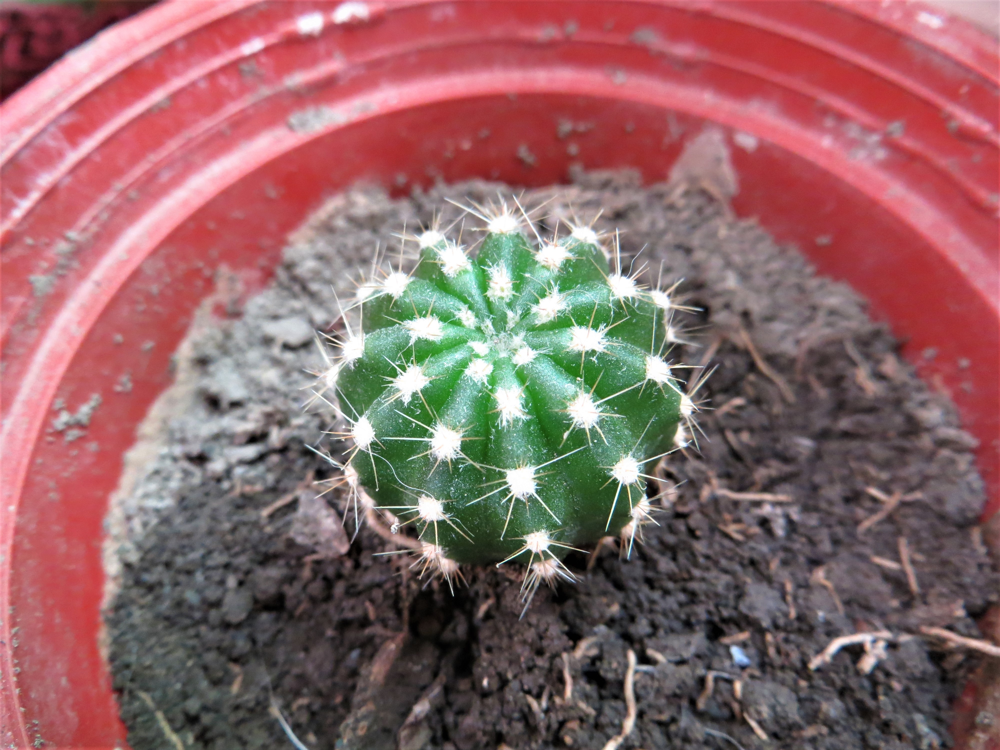
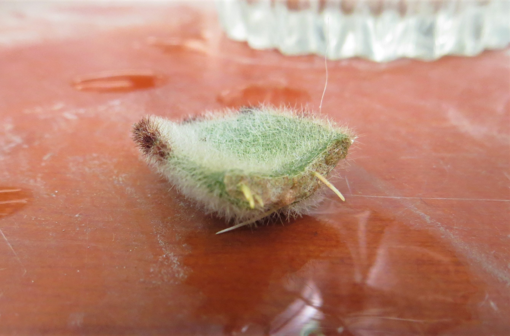
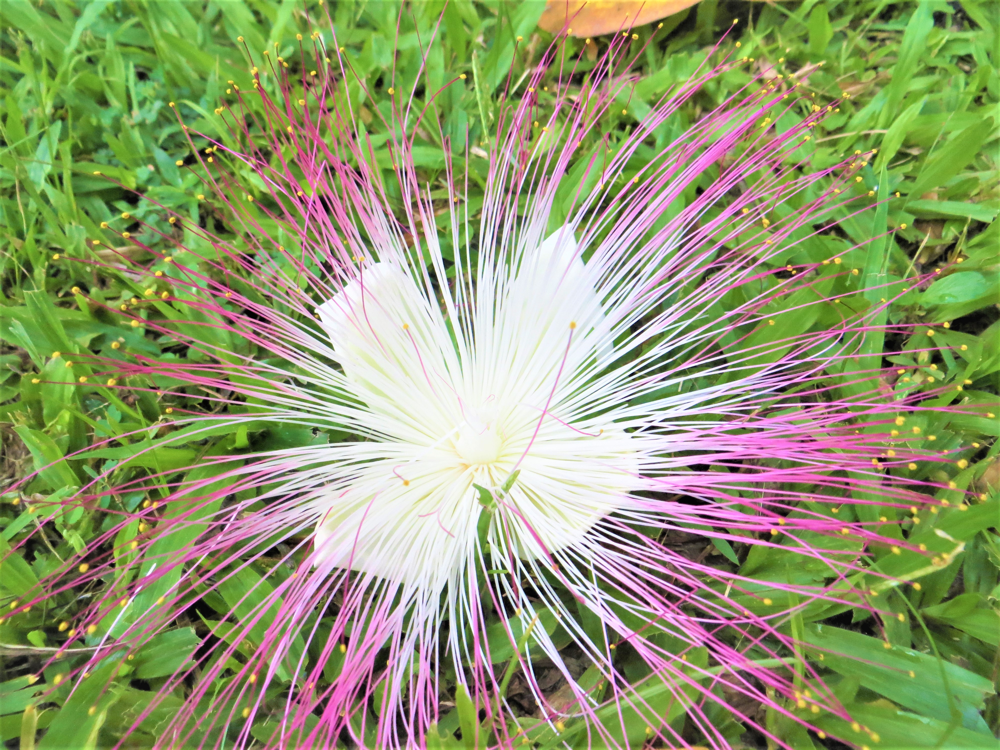
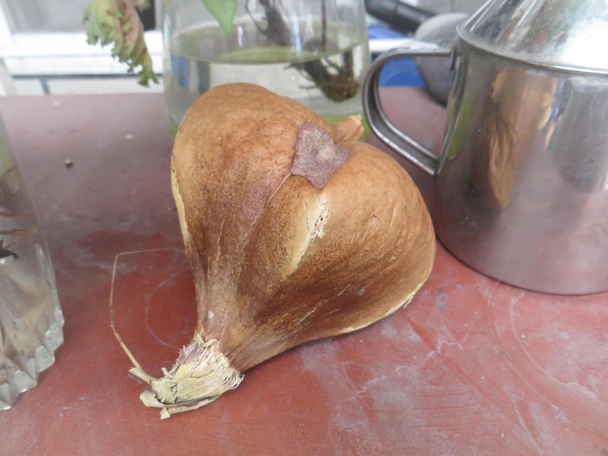
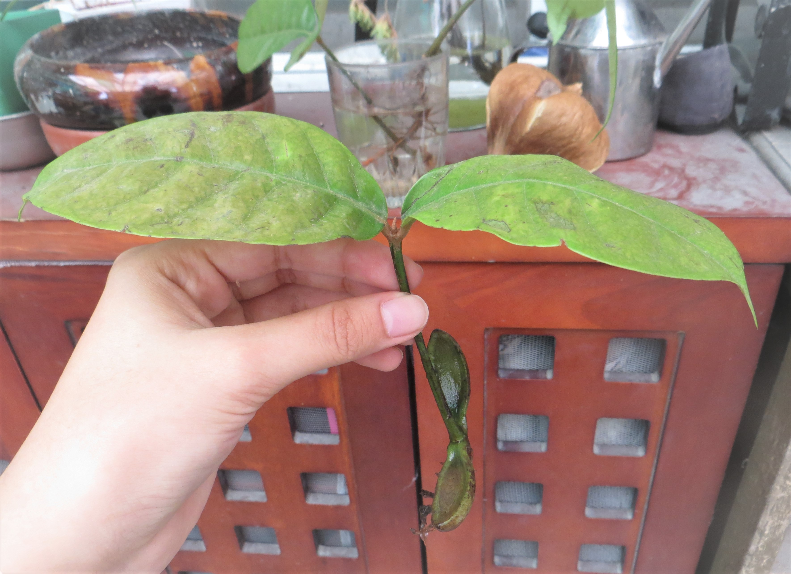
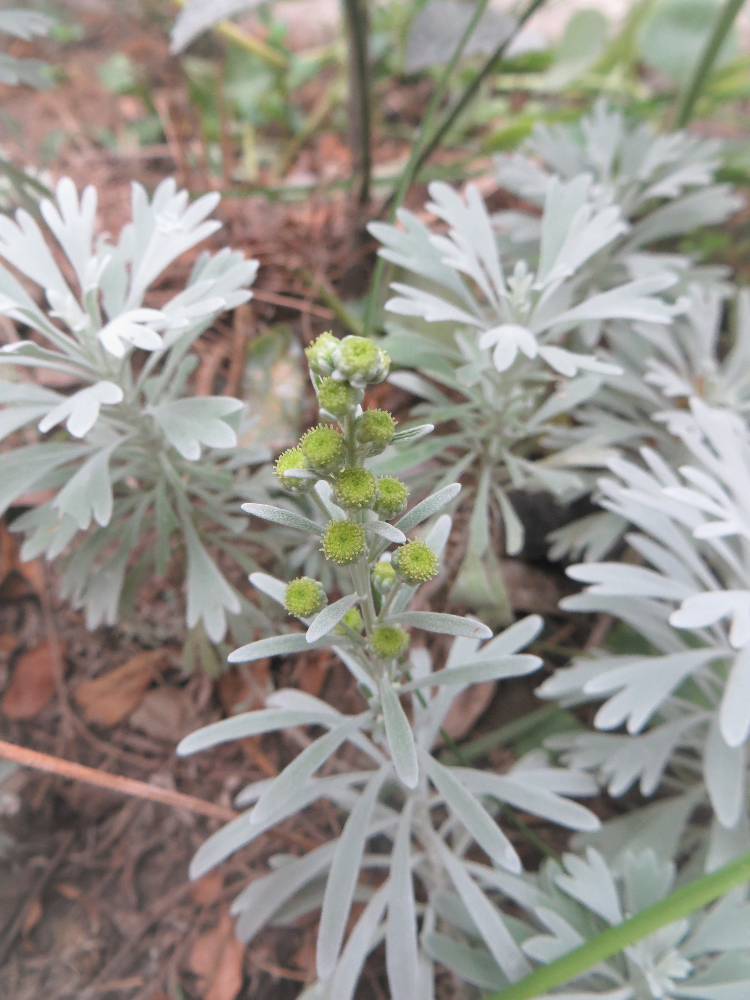
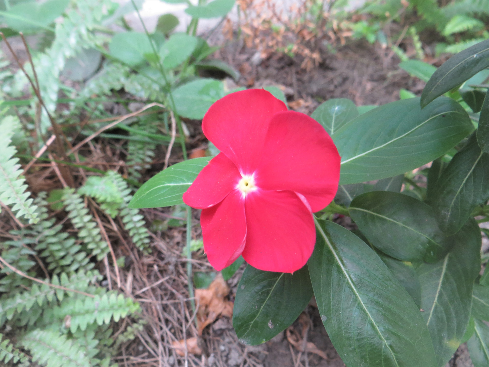

Diary
幾個禮拜前回外婆家時，看到原本就綠意盎然的木頭圍欄上，竟然站滿一盆又一盆的小小仙人掌，原來是從親代身上截下來重新獨立生長的孩子們，而且這一批已經是第三代了 ! 看看第一代的周遭，還充滿活力的圍繞滿新生出來的小子株，異常地熱鬧。
我跟外婆要了一小盆帶回家養，感覺它有趁我不注意時慢慢地長大呢 !
▲ 孫子輩的小孩
早晨在澆水時意外發現，好久之前因不明原因斷掉葉子的兔耳朵，竟然長出根了 ! 我阿姨說她的兔耳很難器官繁殖長出葉子，而我的也是，只有長出根沒有葉子，不過我很慶幸當初沒有丟掉這一小片希望，再觀察一陣子吧。
▲ 葉子切面冒出來的根
一天中午用完餐正走在回教室的路上，發現一顆綠綠方方的棋盤腳果實掉在路邊，一定是從樓梯旁的棋盤腳大樹掉下滾來的，便拾起來跟同學玩丟接球，意外地合適。想帶回家剖開來，就放在紙袋中直到變黃棕色。
棋盤腳的果實有毒，為核果，四方型，含種子一顆，中果皮堅硬富含纖維，故可漂泊海外傳播。
▲ 棋盤腳的落花
▲ 棋盤腳的種子
運東會預演前的打掃時間在掃休息區的落葉時，發現很多這種像是竹蜻蜓的兩葉小樹苗，它們都在大樹的陰影下努力冒出芽，覺得很有毅力還很是可愛便撿了三棵帶回去，先泡水幾天觀察。
▲ 其中一顆貌似帶著種殼
下午用完午飯回來發現，庭院的芙蓉竟然開花了，小小的花不說真的很難察覺到。不只芙蓉，連變種的日日春也開出一朵洋紅的花，在漸漸轉涼的秋日還能開花，精神令人欽佩。
▲ 芙蓉的花
▲ 日日春的花